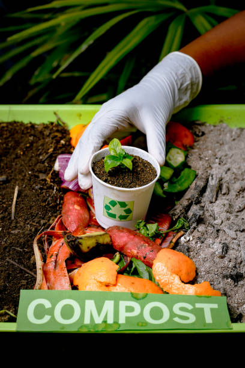
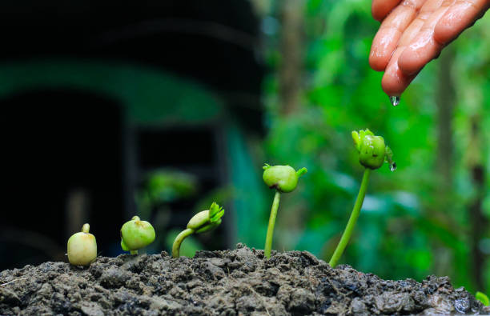

Organic Composting
Turn food waste and organic materials into nutrient-rich compost to improve soil health naturally.

Water Conservation
Adopt drip irrigation, rainwater harvesting, and mulching to reduce water wastage.

Eco-Friendly Pesticides
Use neem oil, garlic spray, and other natural pesticides to protect crops without harming the environment.